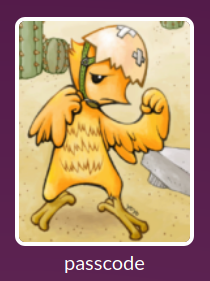
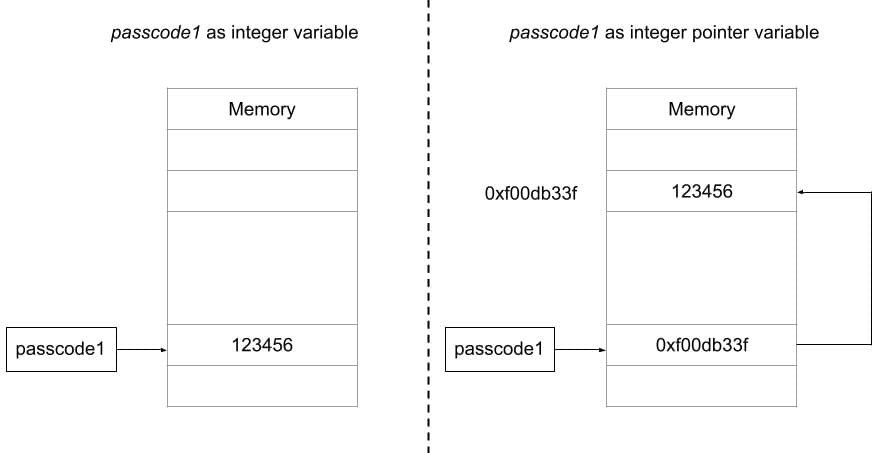
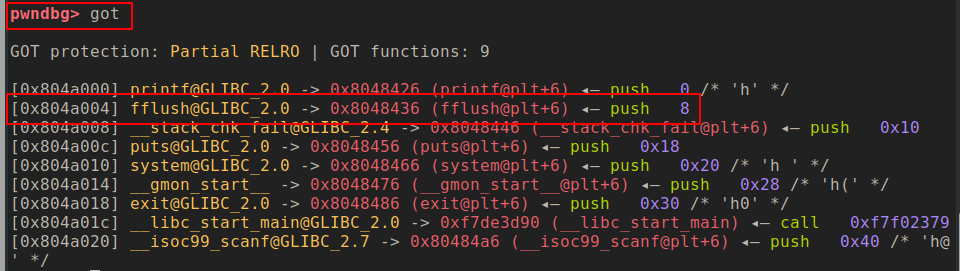

Binary Exploitation [pwnable.kr] - (Level 5) passcode
Challange Description
| Name | random |
| Points | 10 |
| Solves | 7513 times |
| Category | Exploitation |
| Description | Mommy told me to make a passcode based login system. My initial C code was compiled without any error! Well, there was some compiler warning, but who cares about that? |

To get the flag you have to connect to the remote machine using SSH ssh passcode@pwnable.kr -p2222 (pw:guest) and interact with the program.
This challenge is about what can you do if you have an arbitrary write vulnerability, and in this post, you will learn how you can use the vulnerability to get a shell on a system and we will look at what all point in the system we can attack to achieve that. Let’s start by looking at the code.
1 |
|
It’s a simple program which has three input via scanf function so there are three possible opportunities for program corruption. The first input takes the name and prints it and the other two input as some sort of passcodes which are compared with hard-coded values. If the value matches then the values are printed on the console. Well, look very simple, doesn’t it? you might have to do some command-line fu to send hex-value but that fine, once have solved the challenge please read the rest of the post for more insight.
Hint
Well obviously if you are reading, the approach I suggested previously didn’t work out, it’s not that simple after all. The hint of the solution is given in the challenge description, it is something about compiler warning. If you try to compile the program with gcc you will see below warning.
passcode.c:9:10: warning: format ‘%d’ expects argument of type ‘int ‘, but argument 2 has type ‘int’ [-Wformat=] scanf(“**%d“, passcode1);*
passcode.c:14:10: warning: format ‘%d’ expects argument of type ‘int ‘, but argument 2 has type ‘int’ [-Wformat=] scanf(“**%d“, passcode2);*
So the warning says scanf is expecting argument of type int *, aa integer pointer, but an integer is given. Why is the compiler is so irritated about it? maybe for a reason? Let’s try to understand the difference between an integer variable and an integer pointer variable.
An integer variable stores an integer data, but an integer pointer variable stored the address of an integer variable instead of an integer data. The two warning show are both about same issues where scanf is expecting integer pointer but instead, an integer variable is passed, this is where the vulnerability is, when you call the scanf the input will be converted to integer (“%d”) and will be written at the address pointed by passcode1 variable, the difference is subtle but can make a huge impact on execution. The diagram below illustrates what I am trying to tell.

This will give you an arbitrary write. We can target GOT table entry to overwrite any function pointer to redirect it to code dumping the flag. In the next section, we will explore more about this technique.
Solution
But the next question is how to we put the value in passcode1 such that it points to a valid location, as there is no way we can initialize the pointer value in passcode1 unless we can! If you read the code carefully, welcome function is called before login function and login has a variable called name whose content can be controlled by the user and when the welcome function returns the stack gets torn down but the content remains on the stack, later when login function is executed the stack gets reused and the passcode1 holds the first 4 bytes of the char name[100] variable. So we can control the value of passcode1 variable, whatever value we give for the first four bytes of the name variable gets assigned as a pointer value for passcode1 variable.
Now that we can control the value of passcode1 variable and make it point to anywhere in the process memory and when we make the scanf function call we can write whatever value we like which effectively gives an arbitrary write of size 4 bytes.
Now comes the next part, at what address do we write and what? Can’t we overwrite the return address of the login function? We can, but we won’t reach to that point during our execution, why you might ask? Let try to understand it a bit more, let say if we manage to execute the scanf and all the subsequent calls and we reach the point where password check is done if it fails we will exit the program we are not returning from the function, so overwriting return address will not affect the program execution. We need to search some other point in the program that we can overwrite such that we can execute flag dumping part of the code. The location we are looking for is GOT table.
What is the Global Offset Table (GOT)?
When you compile a program, the compiled binary doesn’t have all the code that it needs for execution, for example, the function like printf, scanf, fflush are not present the passcode binary, it only has the reference to those function which are loaded from other binary and those references are stored in something called as Global Offset Table aka GOT. The program binary has the necessary information to search for these referenced functions during load time and GOT table is populated with those references. The segment in which GOT resides in is writable so we won’t have memory permission issues, and if we pointer our passcode1 variable to one of the GOT table entry we can redirect the code execution.
This looks great we can overwrite the function pointer of one of the functions from the GOT table and when that function is executed it will change the flow of the program to wherever location we want. But how do I know what is the GOT table and what is the function we want to overwrite. Good question, this is where pwndbg comes into the picture, it has a nice command called got that prints the GOT table. Let’s try it out, start the passcode program in gdb and put a breakpoint in the main function and run the program then issue the got command and you will see something as shown below.

This command prints all the entries in GOT table along with their value. So, for example, fflush entry is on the address 0x804a004 and the value of the address is 0x8048436 which is the address of fflush function. We can choose to overwrite the fflush function as it is the function just following the scanf function. We can overwrite the address with to the if block of login function the code which prints the flag. Awesome let put together all that we have discussed so far in a script which is as follow
1 | from pwn import * |
Executing this script should give you the flag.
Conclusion
In this challenge, we learnt the very important concept of a pointer and how we can abuse it to get an arbitrary write. We took advantage of that vulnerability to overwrite a GOT table entry to archive code execution the code we executed was to printf challenge flag which would only be printed if the passcode would have matched but instead we managed to do it even without giving correct passcode. We also leant another important Linux ELF file concept of GOT table which is often abused by exploits and malware author for different purposes but here we used it to redirect the program flow. This was a little tricky challenge but I hope you enjoyed it.